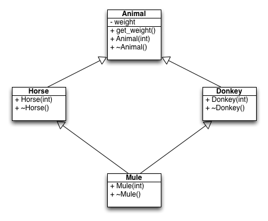

A mule is a cross between a horse and a donkey. As we all know, horses, donkeys and mules are all animals. Given the relationship between the following classes, please implement them. 
Horse *a = new Horse(500);
Donkey *b = new Donkey(300);
Mule *c = new Mule(100);
cout << a->get_weight() << endl;
cout << b->get_weight() << endl;
cout << c->get_weight() << endl;
delete a;
cout << endl;
delete b;
cout << endl;
delete c;
cout << endl;
500
300
100
Horse destructed!
Animal destructed!
Donkey destructed!
Animal destructed!
Mule destructed!
Donkey destructed!
Horse destructed!
Animal destructed!